SERVICE DESIGN ATM
Resumen
La consultoría Touchpoints México nos dio el reto de mejorar el servicio de los cajeros automáticos de un banco de México. El objetivo fue diseñar una propuesta de valor bajo la metodología Service Design. A través de la herramienta doble diamante, descrubrimos que la principal queja de los usuarios de ATM es la falta de entrega de efectivo. Durante el proceso, identificamos que los usuarios siempre buscan de un contacto humano para dar seguimiento a su problemática.
La propuesta aborda cinco touchpoints del servicio de ATM; rediseño de la interfaz del cajero para generar el reporte del problema, ofrecer un ticket o comprobante que indiqué el problema que presentó el ATM, diseño de un cartel informativo sobre cómo dar seguimiento vía telefónica; elaboración del script para los operadores del call center; y la opción de conocer el estatus del reporte en la aplicación del banco.
Miembros del equipo: Adriana Acosta, Ariadna Gutiérrez, Maritza Díaz, Cristal García
Rol: UX Reseach
Duración: Dos sprints
Preámbulo
El cajero automático ha evolucionado en los últimos años, no sólo como un medio para expender efectivo, si no como un multicanal para ofrecer otros servicios bancarios como depósitos, transferencias, venta de tiempo aire o colectas de donativos. En México, los cajeros tienen un papel protagónico y prioritario para los bancos, debido a que el 60% de los pagos se hacen en efectivo, por lo que contribuyen en una mayor penetración bancaria.
Estos aparatos además de ser claramente uno de los canales de autoservicio más flexible de las instituciones financiera por reducir costos operativos, también aumentan la comodidad de sus clientes. Sin embargo, de enero a septiembre de 2017, la Condusef registró 99 quejas de usuarios por hora, derivadas de problemas con cajeros automáticos. Los usuarios argumentaron que las máquinas le ocasionaron un agravio a sus bolsillos en conjunto por 2 mil 262 millones de pesos.
Objetivo del proyecto
Identificar y solucionar el principal problema de los cajeros automáticos para ofrecer a los usuarios una mejor experiencia de servicio a cliente.
Metodología
El proyecto está desarrolllado bajo el mindset Design Thinking y el proceso de diseño de doble diamante.

Descubrir
Lluvias de ideas
El primer paso fue compartir en equipo las problemáticas más frecuente que tiene un ATM para poder generar la primera hipótesis: “El principal problema en cajeros es el cobro de comisiones”.
Encuesta
Para confirmar que la primera hipótesis era el principal dolor de las personas que utilizan los ATM, realizamos 43 encuestas a través de google forms. Abordamos el uso de los ATM, la satisfacción y las experiencias con ellos.
Los resultados fueron:
- Las personas eligen una institución bancaria por asignación de cuenta por nómina, la funcionalidad de su aplicación; y la cercanía del banco a su domicilio.
- Los usuarios utilizan el cajero entre tres a cinco veces al mes.
- Los aspectos positivos de los cajeros ATM es su fácil uso, la rapidez y la disponibilidad.
- La peor experiencia que los clientes han vivido es que, el cajero no entrega la cantidad solicitada pero en el ticket y/o dispositivo móvil, sí está reflejado el retiro de efectivo. El 60% de los casos ocurrieron en Citibanamex.
- Otras malas experiencias es que los cajeros se tragan la tarjeta, están fuera de servicio y la demora en fila.
Observación de campo
Realizamos la visita a la zona de cajeros de las sucursales bancarias Bancomer y Citibanamex para ver el número de cajeros, el comportamiento e interacciones de las personas al entrar/salir de los cajeros, el tiempo en que se realiza una operación, la visualización de los elementos dentro del cajero (carteles, botes de basura, teléfonos especiales, etc.), el diseño y modelo de las máquinas.

Benchamark
Analizamos los sitios web y las aplicaciones bancarias de Citibanamex, Santander y BBVA para evaluar su funcionamiento y estructura con relación a los ATM y encontrar áreas de oportunidad.
Mapa de stakeholders
En este punto, mapeamos los stakeholders que están involucrados en el servicio de uso de cajero, específicamente cuando el usuario tiene un problema con éste. El mapa destaca el área de atención a cliente al ser el principal punto de interacción.
Entrevista
Realizamos un total de seis entrevistas, tres personas digitales y tres de personas no digitales con la finalidad de saber cuál era su experiencia al utilizar el servicio del cajero automático. Las respuestas de los entrevistados dieron paso a localizar los pains y los gains del uso del servicio para, posteriormente, idear la solución del problema.
Con base en los resultados de la entrevista, generamos un mapa de empatía por cada uno de los entrevistados para tener un conocimiento más profundo de su persona, su entorno y sus necesidades como usuarios de cajeros automáticos. Posterior a ello realizamos los ejes de comportamientos y los arquetipos para definir a nuestras user personas, obteniendo dos, Magda Torres es la persona no digital y Pedro Velázquez la persona digital.
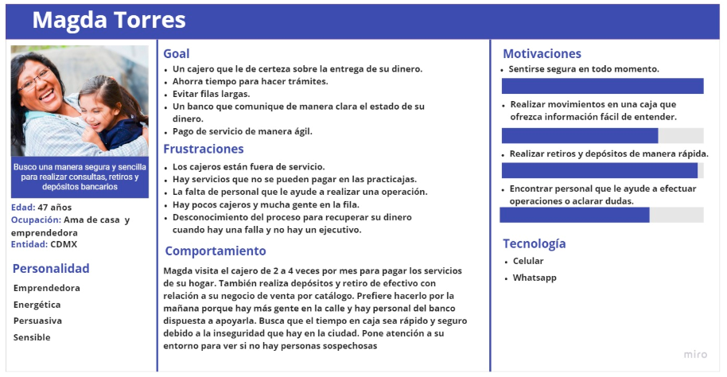 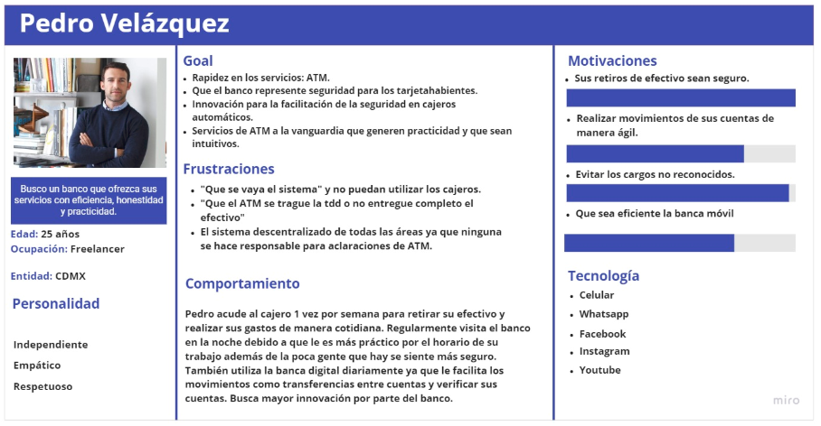Ambos usuarios comparten similitudes en la perspectiva del ATM:

Coustomer Journey Map
El coustomer journey map muestra los momentos antes, durante y después del problema de retirar el efectivo, planteando que la situación ocurre cuando el servicio en sucursal no está disponible, es decir, entre semana después de las 16:hrs, fines de semana o en los cajeros que están en centros comerciales u otro establecimiento.
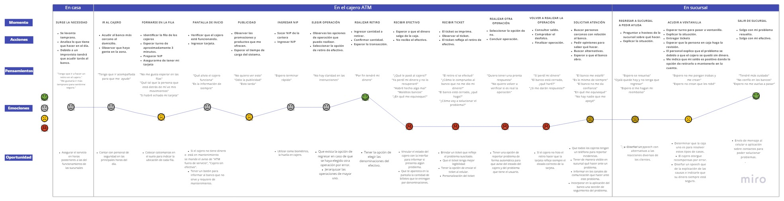Identificamos cuatro touchpoints críticos y con más dolor. Posterior a ello, el usuario pasa por un momento de incertidumbre por no saber qué hacer, con quién acudir o si realmente recuperará el dinero. El punto de más satisfacción sucede cuando el usuario soluciona su problema y sale de la sucursal con su efectivo.

Definir
A través de la técnica How might we? y de manera colaborativa, generamos preguntas para definir el problema y hallar oportunidades para dar solución. La pregunta a resolver fue:
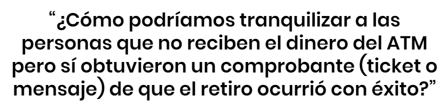Desarrollar
En la fase de ideación utilizamos las herramientas:
- Crazy 8´s para generar ideas y retar la creatividad, adaptar y jugar partiendo de la pregunta propuesta con el How might we.
- From gains to wow para enlistar los aspectos o momentos que tenían conformes y/o satisfechos a los usuarios, así como los elementos que funcionan bien para mejorar la experiencia en el ATM.
- Por medio del ejercicio de Clustering, agrupamos las ideas de crazy´s 8 por afinidad y complementación; y con Telescoping, las big ideas fueron sometidas a votación por nosotras y por cinco usuarios para obtener las ideas más afines a la solución de la problemática.
- Finalmente, realizamos la matriz de relevancia para priorizar e identificar las ideas más alineadas a la solución y con más diferenciación, logramos hallar tres. 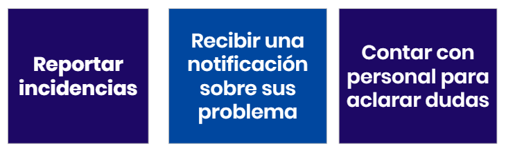

Posterior a identificar las big ideas, fue necesario validar si éstas iban acorde al negocio. Con ello hicimos el análisis FODA, donde consideramos los aspectos internos y externos de cada solución respecto al problema. También elaboramos el value proposition canvas para facilitar la toma de decisiones antes de comenzar a prototipar la solución del problema, para ello se consideraron obstáculos, frustraciones, beneficios, aspiraciones y las necesidades de cada uno. Finalmente, jerarquizamos la información acorde a la importancia; lo esencial y lo extremo, lo funcional, lo usable y lo wow.
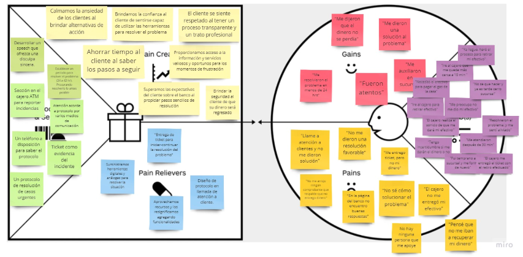 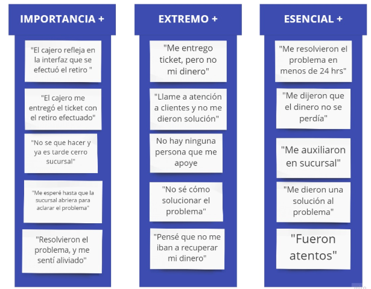Prototipar
La técnica que elegimos fue realizar un simulacro de baja fidelidad. Consistió en hacer bocetos de la información que aparecerá en la pantalla de un cajero automático para hacer el reporte del problema; la elaboración y redacción de un ticket de reporte, un cartel informativo para obtener atención vía telefónica, la opcion de dar seguimiento desde la aplicación y del sitio web de Citibanamex.
Testing
Elaboramos un user test planning canvas para seccionar las tareas, y métricas más importantes a considerar y tener un mejor control del testing. El prototipo se testeó con cinco personas y la información se vació en un user test analysis canvas. Utilizamos las técnicas de think aloud y walkthrough.
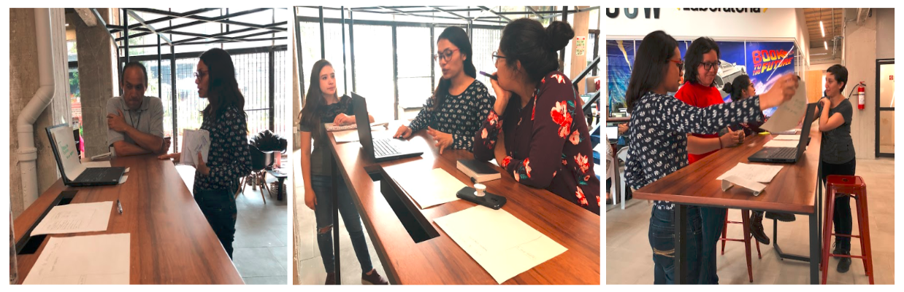Los comentario y/o observaciones claves que realizaron los usuarios en el testing fueron:
Interfaz
- Indicar el periodo de resolución.
- Las instrucciones no especifican cómo realizar todo el proceso.
- Agregar en la sección de tipo de reporte “otros”.
Ticket
- La información del ticket es confusa, ya que invita a realizar otro reporte.
- Aún con el ticket, las personas buscan un segundo contacto para verificar el estatus del problema.
- La pantalla no da la opción de imprimir o no el ticket.
- Tener la posibilidad de recibir el ticket de manera digital.
- El ticket no tiene consistencia con el letrero de zona de cajeros.
Atención telefónica
- Tener un número único para hacer la llamada y no perder tiempo con el menú.
- Replantear el flujo del proceso de atención.
- Reducir el número de datos que se solicitan al cliente para verificar su identidad.
Aplicación móvil
- Poder ver el estatus del problema.
- Recibir la notificación de que el reembolso ya se efectuó.
El insight que encontramos en la etapa de testeo y el cual fue crucial para nuestra propuesta es:
“Las personas buscan del contacto de otras personas para aclarar sus dudas y así tranquilizarse”
Propuesta
Después de iterar y corregir los errores de información y el flujo de navegación, elaboramos el prototipo de alta fidelidad con Adobe XD y Marvel.
La propuesta de valor aborda cinco touchpoint que realzian las personas al momento de presentar el problema y en las cuales, buscamos tranquilizarlos ante la falta de personal físico.
Interfaz en cajero
El principal punto de contacto que tienen los usuarios con el problema es la interfaz del cajero. Los ATM de Citibanamex no cuenta con una sección en donde el usuario pueda reportar los problemas que tiene con éste.
Cuando el cajero indica que la transacción es exitosa y da la opción de hacer o no otra operación, colocamos un botón para hacer un reporte. Al dar clic, se despliegan los problemas que pueden reportarse, en este caso, el ATM no entregó el dinero.
Posteriormente, la pantalla muestra el número de reporte e indica que el problema será resuelto de 24 a 72 horas, esto con la finalidad de tranquilizar al usuario. El cajero ofrecera el ticket como comprobante de lo sucedido, dando la opción de imprimirlo (pensado para las personas no digitales) o que le sea enviado a la aplicación móvil o vía mensaje sms (dirigido a las personas digitales). Buscamos que desde el primer momento del problema, el usuario sepa qué ocurrió y que no es necesario generar otro reporte.
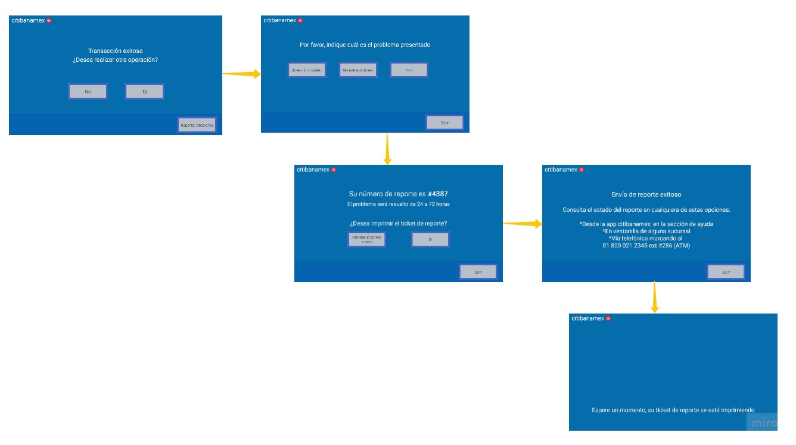Ticket
El ticket del reporte del problema contiene el número del reporte, la problemática, la fecha y hora; el ID del cajero y la ubicación del ATM. Además, ofrece otras alternativas para solicitar ayuda y los contactos para conocer el estatus de su reporte.
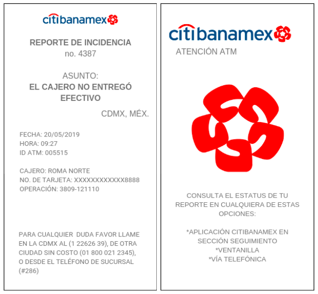Cartel en zona de cajero
Debido a que las personas buscan un segundo contacto para validar la información y conocer el estatus del mismo, generamos un apoyo visual para informar a los tarjetahabientes sobre qué hacer en caso de tener un problema con el ATM. Éste estará colocado dentro de la zona de cajeros. El cartel indica de manera breve y concisa, los pasos a seguir: tener el ticket de reporte, el número a donde marcar y/o utilizar los canales alternos como la app móvil y la página web.
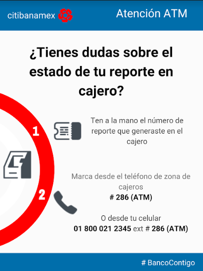Aplicación móvil
Citibanamex cuenta con una aplicación móvil; para aprovechar este canal integramos en la sección de ayuda el apartado “Estado de reporte”, en donde el usuario tiene la posibilidad de conocer el estado de resolución de su problema. También podrá recibir alertas de cuando el efectivo ya esté disponible en su cuenta.
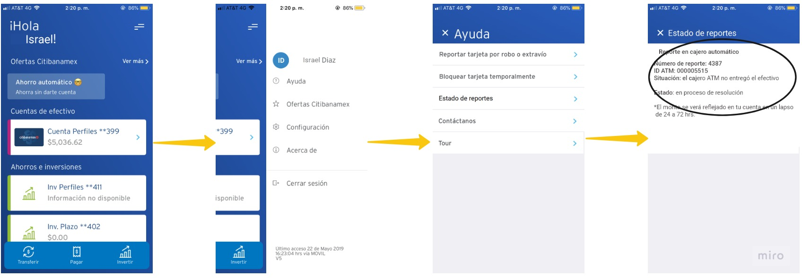Atención telefónica
Los usuarios buscan tener un contacto vía telefónica para aclarar sus dudas. Para brindar un buen servicio a cliente propusimos un protocolo de atención telefónica para las personas que laboran en el call center de Citibanamex. Asimismo, elaboramos el script del área de atención a cliente, donde tienen que explicar el por qué del problema y aceptar la responsabilidad del banco ante el problema. Para agilizar el proceso, el personal de atención a cliente solicitará sólo tres datos para verificar la identidad; nombre completo, número de reporte y cantidad a retirar.
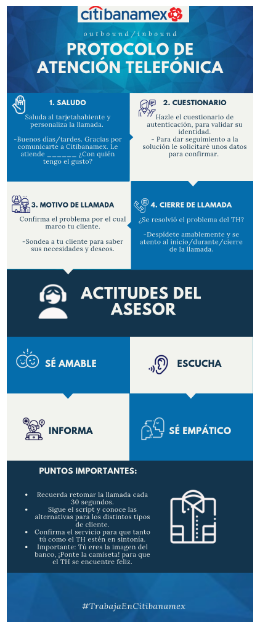Solución
Consultar el video de la propuesta.
Siguientes pasos
- Iterar las propuestas rediseñadas.
- Validar si la notificacion del reporte es mejor que llegue por medio de la aplicación o mensajes de texto.
- Testear el script bajo diversas circunstancias.